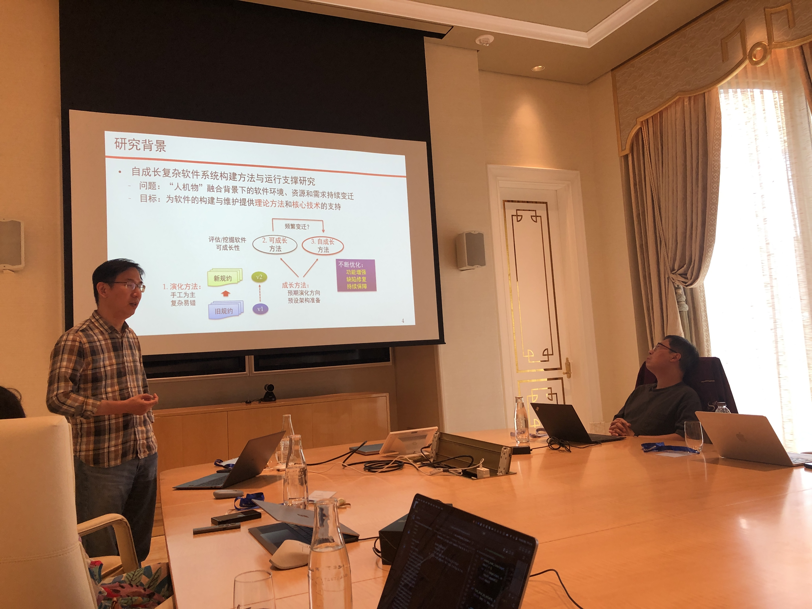
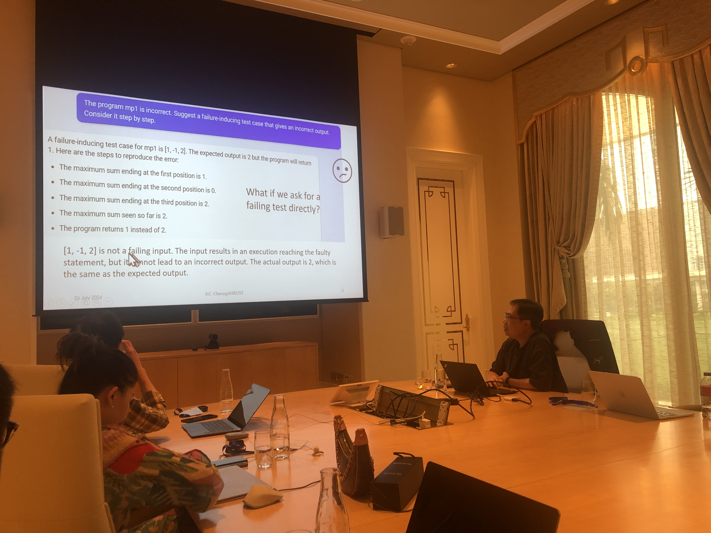
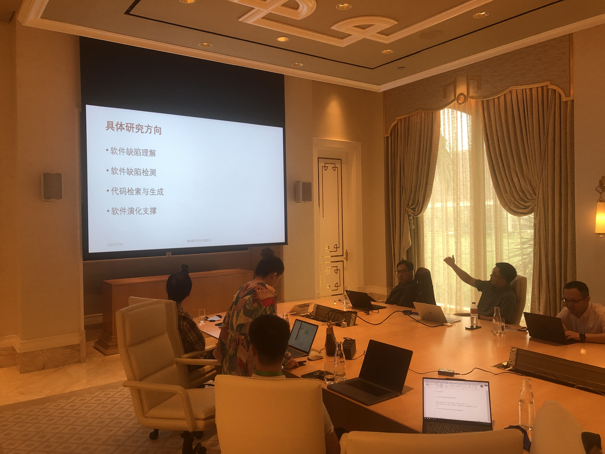

项目年度进展讨论会在澳门召开
2024年8月2日
2024年7月26日，国家自然科学基金重点项目“自成长复杂软件系统构建方法与运行支撑研究”项目年度进展讨论会在澳门特别行政区永利皇宫酒店召开。项目负责人南京大学许畅教授首先介绍了项目的整体进展情况和南京大学团队的年度工作进展。随后广州市香港科大霍英东研究院张成志教授、南方科技大学刘烨庞副研究员分别介绍了广州港科大霍英东研究院团队和南方科技大学团队的年度工作进展，南京大学左志强长聘副教授和秦逸助理研究员分别介绍了各自工作。最后，与会人员就项目后续研究计划和结题相关准备工作进行了讨论。广州市香港科大霍英东研究院王莹副教授、田永强助理教授及各团队的骨干研究生也参加了会议。
线下参会人员合影
许畅教授介绍项目整体进展情况
张成志教授介绍广州市香港科大霍英东研究院团队工作进展
刘烨庞副研究员介绍南方科技大学团队工作进展